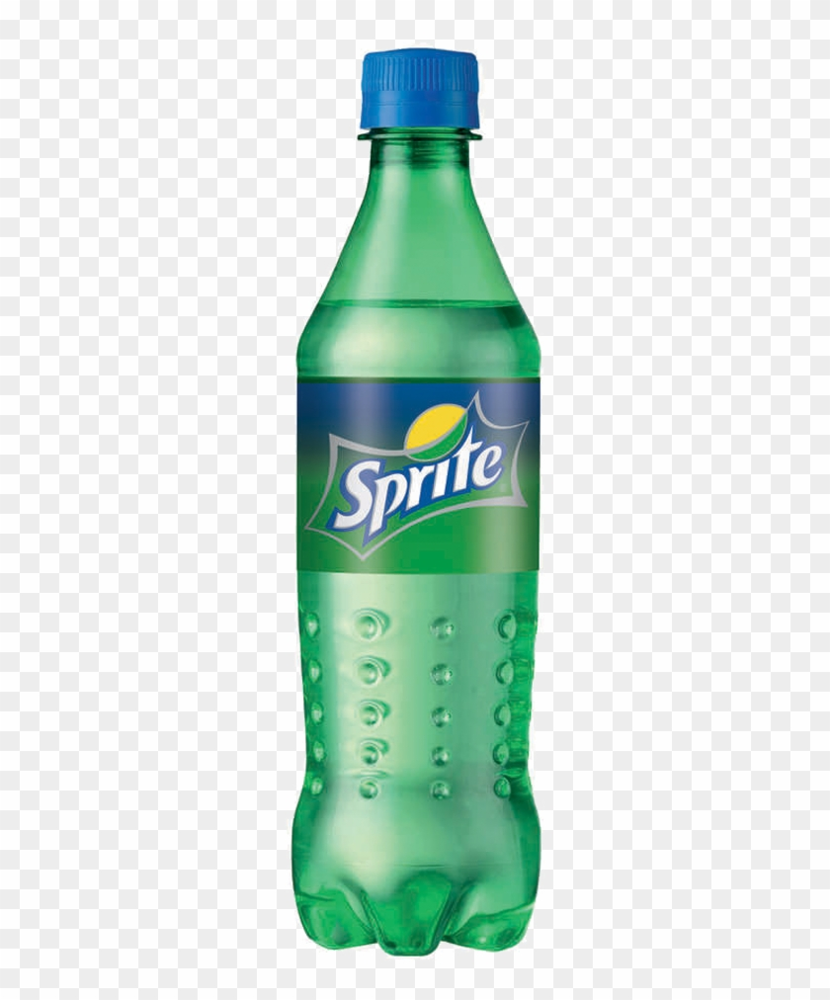

Titolo dell'Articolo Principale

Questo è un esempio di articolo in stile giornale. Il testo è distribuito su più colonne per simulare l’impaginazione tipica dei quotidiani cartacei. Puoi scrivere qui il contenuto dell’articolo, includendo notizie, approfondimenti e storie.
L'immagine sopra può essere caricata direttamente dal tuo computer grazie al selettore file. Una volta scelta, verrà mostrata in anteprima all’interno dell’articolo.
Questo layout utilizza uno stile classico con font serif, colori neutri e una struttura pulita per richiamare l’aspetto dei giornali tradizionali.